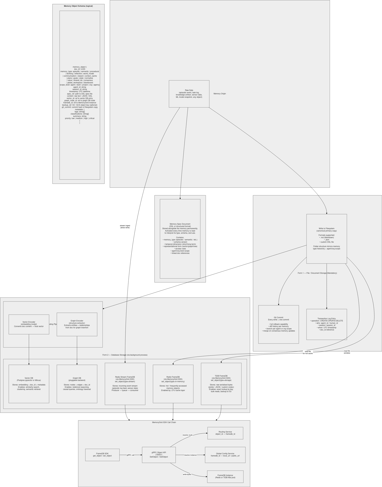

Deployment
This page covers:
- the databases for Agentic Memory (PostgreSQL, Weaviate, ArangoDB, Redis) on Kubernetes;
- running the Learner and Incorporator services;
- running the test suites.


Databases on Kubernetes
The manifests in agent-memories/k8s/ run all four databases in the agentic-memory namespace and expose them through NodePort services:
| Database | Manifest | Image | Workload | Container port | NodePort | Persistent volume |
|---|---|---|---|---|---|---|
| PostgreSQL | postgres.yaml |
postgres:16 |
StatefulSet | 5432 | 30432 | postgres-pvc (10 Gi) |
| ArangoDB | arango.yaml |
arangodb:3.12 |
StatefulSet | 8529 | 30529 | arango-pvc (10 Gi) |
| Weaviate | weaviate.yaml |
semitechnologies/weaviate:1.25.0 |
StatefulSet | 8080 (HTTP), 50051 (gRPC) | 30880, 30851 | weaviate-pvc (10 Gi) |
| Redis | redis.yaml |
redis:7 |
Deployment | 6379 | 30637 | none (data is not persisted) |
Weaviate runs with anonymous access and no vectorizer module: Agentic Memory supplies its own embeddings. PostgreSQL, ArangoDB and Redis read their passwords from the postgres-secret, arango-secret and redis-secret Secrets defined in the manifests.
Steps
-
Create the host directories used by the
hostPathvolumes (on the node):bash mkdir -p /data/agentic-memory/{postgres,arango,weaviate} -
Change the passwords in the Secrets in
postgres.yaml,arango.yamlandredis.yaml. -
Apply the manifests. Volumes go first, so the StatefulSets can bind their claims:
bash kubectl create namespace agentic-memory # the manifests don't create the namespace kubectl apply -f k8s/pv-pvc.yaml kubectl apply -f k8s/postgres.yaml kubectl apply -f k8s/arango.yaml kubectl apply -f k8s/weaviate.yaml kubectl apply -f k8s/redis.yaml kubectl get pods -n agentic-memory -w -
Point Agentic Memory at the node:
```python from agentic_memory import MemoryConfig, PostgresConfig, WeaviateConfig, ArangoConfig, RedisConfig
NODE = "
" config = MemoryConfig( postgres=PostgresConfig(host=NODE, port=30432, password=" "), weaviate=WeaviateConfig(host=NODE, port=30880, grpc_port=30851), arango=ArangoConfig(url=f"http://{NODE}:30529", password=" "), redis=RedisConfig(host=NODE, port=30637, password=" "), ) ``` The examples in
agent-memories/examples/read the same settings from environment variables:POSTGRES_HOST,POSTGRES_PORT,POSTGRES_PASSWORD,ARANGO_URL,ARANGO_PASSWORD,WEAVIATE_HOST,WEAVIATE_PORT,WEAVIATE_GRPC_PORT,REDIS_HOST,REDIS_PORTandREDIS_PASSWORD.
The PostgreSQL schema, Weaviate collections and ArangoDB collections are created automatically by the library on first connection.
The
hostPathvolumes suit single-node development clusters (minikube, kind, k3s). For production, use a StorageClass/CSI driver instead and do not expose the databases on public NodePorts.
Learner and Incorporator Services
Both are FastAPI apps. For a single machine, run them side by side with shared local storage:
export MG_TIDB_DSN="sqlite+aiosqlite:////srv/memorygrid/frame.db"
export MG_LESSONS_ROOT="/srv/memorygrid/lessons_repo"
export ANTHROPIC_API_KEY="..." # optional; FakeLLMClient is used without it
export MG_LLM_MODEL="claude-sonnet-5-5"
(cd agent-memories/Learner && uvicorn memorygrid_learner.main:app --port 8000) &
(cd agent-memories/Incorporator && \
MG_FEEDBACK_TIDB_DSN="sqlite+aiosqlite:////srv/memorygrid/feedback.db" \
MG_DSL_MATCH_RULES_PATH="/srv/memorygrid/dsl_match_rules.json" \
uvicorn memorygrid_incorporator.main:app --port 8001) &
For multiple machines or production, share real infrastructure:
| Setting | Learner | Incorporator |
|---|---|---|
MG_TIDB_DSN |
TiDB/MySQL (mysql+aiomysql://…) |
same |
MG_VECTOR_BACKEND / MG_VECTOR_DSN |
pgvector or milvus |
same |
MG_LESSONS_ROOT |
Shared volume | same |
MG_FEEDBACK_TIDB_DSN |
— | Feedback DB |
TiDB access needs a MySQL async driver (for example
aiomysql), which is not in the requirements files. pgvector needspsycopg[binary]andpgvector; Milvus needspymilvus.
Run one Learner instance, because the scheduler and watcher are in-process. Only the Learner runs the mining schedule and the draft watcher; the Incorporator does not.
Running the Tests
| Package | Command | Needs services |
|---|---|---|
| Agentic Memory | cd agentic-memory && pytest |
No (backends are mocked) |
| Agent FS | cd fs && pytest |
No (needs git) |
| Learner | cd Learner && pytest -q |
No (SQLite, in-memory vectors, fake LLM) |
| Incorporator | cd Incorporator && pytest -q |
No (same, plus the sibling Learner/) |